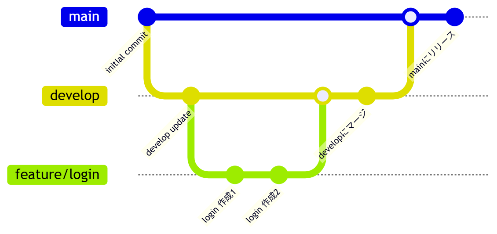
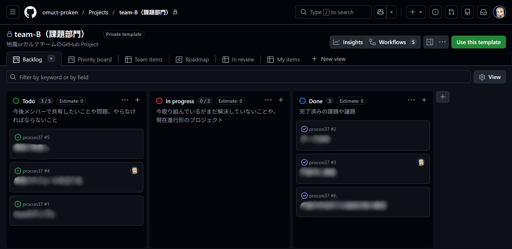

1 本日の内容
今回はチーム開発におけるGitHubの使い方について学びます。プロコンや実際のソフトウェア開発では、複数人で協力してプロジェクトを進めることが多くあります。その時に活躍するのがGitHubです。前回までの講座でGitHubに触れましたが、今回はより詳しくチーム開発の中でどのようにGitHubを使うのかを解説します。
2 準備と復習
この講座では、前回の講座「第4回 HTMLとCSS」で学んだGitHubの基本が理解していることを前提としています。コミット、push、pullといった基本的な概念はこの講座でもう一度詳しく説明します。
今回の学習では、実際にチームで作業することを想定した演習を行います。可能であれば、2～3人のグループで学習することをお勧めします。グループがない場合は、1人で複数のフォルダを使ってシミュレーションすることも可能です。またmhutchie.git-graphの拡張機能をダウンロードしておいてください。
チーム開発について
チーム開発とは、複数のプログラマーが協力して1つのプロジェクトを進めることです。プロコンでは「課題部門」と「自由部門」がありますが、どちらでも複数人で開発することがあります。特に大型プロジェクトでは、異なる機能を異なる人が担当することで開発効率を高めることができます。しかし、複数人で開発するとコードの競合が発生したり、誰が何をしているかわからなくなったりすることがあります。これを防ぐためにGitHubなどのバージョン管理ツールが必要になるのです。
3 チーム開発の流れ
高専プロコンにでるためにはただプログラムを書くだけでは不十分です。段階的に進めることで、バグを減らし、効率的に開発を進めることができます。一般的なソフトウェア開発では、以下の5つのステップを踏みます。
要件定義 → 設計 → 製作 → テスト → 実装
これらの各段階では異なるタスクが行われ、段階ごとに関わる人間も異なります。今回ではプロ研ではどのように開発を進めているか、それぞれについて詳しく説明します。
3.1 要件定義
要件定義とは、作成するシステムやアプリケーションが何をすべきか、どんな機能を持つべきかを明確にする段階です。プロコンでいえば、「課題部門であればお題に沿った案を考える」「自由部門であれば身近な問題を解決するシステムを企画する」段階に相当します。
重要なのは、この段階でペルソナを決めることです。ペルソナとは、あなたのシステムやアプリケーションを使う「ユーザー像」を具体化したものです。例えば、「高校生のための学習支援アプリ」であれば、ペルソナは「数学が苦手な高校1年生」かもしれません。ペルソナを決めることで、ユーザーの視点に立って、本当に必要な機能や使いやすさを考えることができます。このペルソナを決める作業は具体的であればあるほど良いです。
今回はいきなりアプリの話をしてもわかりにくいので、カレーを作るという例で考えてみましょう。カレーを作るとき、まずは「誰のために作るのか」を考えます。例えば、「辛いものが苦手な子供のためのカレー」なのか、「スパイシーなカレーが好きな大人のためのカレー」なのかによって、必要な材料や調理方法が変わってきます。これがペルソナを決めるということです。
ペルソナの例
- 年齢：小学校低学年（2年生）
- 性別：女性
- 特徴：家では甘口のカレーを食べている。野菜全般があまり好きじゃない。お肉は大好き。歯の生え変わりのタイミングで硬いものが噛めず、食欲が低下している。
- 課題：給食で出る少し辛いカレーを食べられるようになりたい。
この段階では、まだプログラムを書きません。ホワイトボードに図を描いたり、紙に箇条書きで機能を列挙したりして、アイデアを整理します。プロコンでは、予選提出資料にこのような要件定義の内容をまとめることが多いので、この段階を丁寧に進めることが重要です。AIなどもうまく活用してペルソナを作成させましょう。
3.2 設計
設計とは、要件定義で決めた機能を、実装するための具体的な技術で「どのように実現するか」を計画する段階です。この段階で以下のようなことを決めます。
技術選定
どんなマイコン（ハードウェア）や開発環境を使えば実装できるか。例えば、IoTシステムであればArduinoやRaspberry Piを使うのか、それともPythonで実装するのか、など。
詳細設計
データベース（DB）の設計、画面遷移図の作成、APIの仕様定義など。プロコンであれば、使用するプログラミング言語、ライブラリ、データベースの構成などを決めます。
これらの内容は、プロコンの予選提出資料に含まれることが多く、評価の対象になります。設計がしっかりしていないと、製作段階で問題が生じたり、個々のプログラマーが異なる方針で進めてしまったりすることになります。この段階も、実際にコードは書きません。ドキュメント、図、仕様書などの形式で、実装方針を共有可能な形にまとめます。
先ほどのカレーの例であれば、「どんな材料を使うか」「どんな調理方法を使うか」「どんな盛り付けにするか」などが設計にあたります。例えば、「辛いものが苦手な子供のためのカレー」を作る場合、材料としては「辛さを抑えるための牛乳やヨーグルト」「野菜を小さく切るための包丁」「お肉を柔らかくするための圧力鍋」などが必要になるかもしれません。また、調理方法としては「まず野菜とお肉を炒めてから、牛乳やヨーグルトを加えて煮込む」という手順が考えられます。
3.3 製作
製作とは、要件定義と設計をもとに、実際にプログラムを書く段階です。複数の開発者が異なる機能を分担して実装します。この段階で初めてGitHubが活躍します。なぜなら、複数の開発者が同時に異なるファイルを編集する場合、ファイルの衝突を避ける必要があるからです。
ここで重要なのが、誰が見てもわかるコードを意識して作成することです。プロコンでは、ソースコードも採点対象に入ります。変数名を意味のあるものにする、コメントを適切に入れる、インデント（字下げ）を統一する、など、「コードの可読性」を高めることが大切です。
コードの可読性を高めるコツ
- 変数名は
xやtmpではなく、何を表しているか明確な名前を付ける - 複雑なロジックには丁寧にコメントを入れる
- インデントを統一し、機械的に見やすくする
- 関数は1つの機能だけを行うよう設計する
- こまめに
pushする
カレー作りでも、みんなが共通認識として「野菜は小さく切る」と決めていても、みじん切りしたり薄切りにしたりする人がいると、味や食感がバラバラになります。同様に、コードも書き方もバラバラだと、可読性が低下します。だからこそ、コードの可読性を高める作業が重要なのです。
3.4 テスト
テストとは、作成したシステムが要件通りに動くかどうかを確認する段階です。この段階では、単に「動く」ことを確認するのではなく、「仕様書」を用意し、それに基づいてテストを行う必要があります。カレー作りでいうところの「味見」にあたります。
例えば、「ユーザーが3つまでファイルアップロードできる機能」という要件があったなら、以下のようなテストを行います。
- ファイル1つをアップロードできるか
- ファイル3つをアップロードできるか
- ファイル4つをアップロード しようとした時、エラーが表示されるか
- 大容量ファイルをアップロードした時、正しく処理されるか
プロコンでは、大会当日に実際にプレゼンテーションをしながらシステムを動かします。その時に予期しないバグが出ないよう、事前にこのようなテストを綿密に行う必要があります。
3.5 実装
実装とはテストで見つかった問題を修正し、システムを完成させる段階です。バグが見つかれば修正し、性能が不足していれば改善しユーザーが使いやすくなるよう調整します。プロコンでは、大会当日に向けて最終調整を行う段階です。
チーム開発では、この段階でも複数人が協力して修正を進めます。GitHubを使うことで、誰が何を修正しているか、修正履歴はどうなっているかを追跡することができます。
4 GitHubでのチーム開発
前の章で、ソフトウェア開発の5つのステップを説明しました。次に、これらのステップをGitHubを使ってどのように進めるかについて説明します。特に「製作」段階で、複数人がどのようにコードを共有し、管理するかについて説明していきます。
4.1 リポジトリの作成と設定
チーム開発を始めるには、まずプロジェクトのリーダー（リーダー権限を持つ人）が中央のリポジトリ（プロジェクトのデータベース）をGitHub上に作成します。このリポジトリには、すべてのチームメンバーがアクセスしてコードの変更を共有します。複数人で行う場合は1人リーダー役を決めて進めてください。
リポジトリを作成する流れ
- GitHubにログインし、画面右上のボタンから「New repository」を選択
- Repository nameに、プロジェクト名（例：
procon-2026）を入力 - Descriptionにプロジェクトの説明を入力（任意）
- 「Add a README file」にチェックを入れると、READMEファイルが自動生成される
- 「Create repository」ボタンをクリック
リポジトリが作成されたら、次にチームメンバーを追加する必要があります。これを「Collaborator設定」と呼びます。
Collaboratorを追加する流れ
- リポジトリのページで、「Settings」タブをクリック
- 左側のメニューから「Collaborators」を選択
- 「Add people」ボタンをクリック
- チームメンバーのGitHubユーザー名またはメールアドレスを入力
- 相手がCollaborator招待を承認すれば、チームメンバーがリポジトリにアクセスできるようになる
git clone https://github.com/[ユーザー名]/[リポジトリ名].gitこのコマンドを実行すると、リポジトリがあなたのパソコンにダウンロードされます。以降、このダウンロードされたフォルダが「ローカルリポジトリ」となり、ここで作業を行います。
4.2 ブランチについて
複数の開発者が同じリポジトリで作業する場合、全員がメインのコード（通常はmainまたはmasterブランチ）に直接書き込みを行うと、コンフリクト（衝突）が発生しやすくなります。これを防ぐために、ブランチという機能を使います。
ブランチとは、メインのコードから分岐した「独立した作業用の領域」です。本番環境のメインのコードに影響を与えることなく、自分のブランチで新しい機能を開発できます。

チーム開発における一般的なブランチの構成
main（またはmaster）ブランチ：本番環境のコード。安定して動作することが保証されている。developブランチ：開発中のコード。mainにマージする前の開発用ブランチ- 機能ブランチ（例：
feature/login、feature/database）：特定の機能を開発するためのブランチ。各開発者が異なる機能ブランチで作業する - 修正ブランチ（例：
fix/bug-001）：バグを修正するためのブランチ
プロコン向けには、以下のようなシンプルなブランチ構成でも十分です。
main：完成したコード- 個人ブランチ（例：
feature/tanaka-ui、feature/suzuki-backend）：各メンバーが担当する機能を開発するためのブランチ
4.3 ブランチの作成とpush
では、実際にブランチを作成し、そこに自分のコードをpushしてみましょう。VS Codeとコマンドプロンプトを使います。
ステップ1：ローカルリポジトリをVS Codeで開く
前章で紹介したクローンコマンドを実行したフォルダを、VS Codeで開きます。左側のエクスプローラにフォルダが表示されます。
ステップ2：ブランチを作成する
VS Codeの左下にソース管理のタブがあります。そこから、現在のブランチ（通常はmain）が表示されているをクリックします。すると、新しいブランチの作成という選択肢が出るので、クリックしてください。
ブランチの名前を入力するダイアログが出ます。ここで、自分が開発する機能に合わせたブランチ名を入力します。例えば、ログイン機能を担当するならfeature/login、UIを担当するならfeature/uiなどです。
ブランチ名の命名規則
ブランチ名は、何の機能を開発しているか一目瞭然な名前を付けることが大切です。例えばfeature/loginのように、先頭に「種類」を付け、スラッシュの後に「機能名」を付けるのが一般的です。
-
例
feature/user-authentication：ユーザー認証機能feature/database-connection：データベース接続機能fix/null-pointer-error：Nullポインタエラーの修正docs/readme-update：READMEの更新
ステップ3：コードを編集する
新しく作成したブランチで、必要なファイルを編集します。例えば、ログイン機能のHTMLやJavaScriptを作成したり、修正したりします。今回は何でも構わないのでファイルを作成して何か書いて保存してみてください。
ステップ4：コミットする
コミットとは、自分の変更内容をローカルリポジトリに記録する作業です。VS Codeのソース管理タブで、変更したファイルが表示されます。
コミットメッセージを入力するテキストボックスに、何を変更したかを簡潔に書きます。例えば「ログイン画面のUIを完成させた」のような内容です。その後、「Commit」ボタンをクリックします。
ステップ5：pushする
Pushとは、ローカルリポジトリの変更をリモートリポジトリ（GitHub上のリポジトリ）にアップロードする作業です。VS Codeのソース管理タブから、の「Push」ボタンをクリックします。
初めてこのブランチをpushする場合、「Publish Branch」という表示が出ます。これをクリックすると、新しいブランチがGitHub上に作成され、あなたのコミットがアップロードされます。
以降は、コードを編集してコミット、pushを繰り返します。
演習１ : ブランチの作成とpush
実際にチーム開発をシミュレートしてみましょう。先ほどはVS Codeを用いて以下のステップを行いましたが、3番目の手順からコマンドを用いて実行してください。VS Codeでの操作を覚えることも大切ですが、コマンドでの操作も覚えておくと、より柔軟にGitを使いこなせるようになります。必要になるコマンドは自分で調べてみましょう。わからない場合は部長や先輩に聞いてみてください。コマンドはVS Codeのターミナルから実行できます。
- グループで1つのGitHubリポジトリを作成する（リーダーが作成）
- 他のメンバーをCollaboratorとして追加する
- 各メンバーは、リポジトリをクローンする
- 各メンバーは、異なるブランチを作成する（例：
feature/member-a、feature/member-b） - 各自のブランチで、簡単なHTMLファイルを作成する（例：自己紹介ページ）
- ファイルをコミットし、pushする
- GitHub上で、複数のブランチが存在することを確認する
5 プルリクエストとレビュー
前の章で、各メンバーが自分のブランチで作業し、それをpushしました。次のステップは、これらのブランチを「main」ブランチにマージ（統合）することです。しかし、いきなりマージするのではなく、プルリクエストという機能を使ってコードのレビューを行うのが一般的です。
5.1 プルリクエストとは
プルリクエスト（Pull Request, PR）とは、「自分のブランチの変更を、メインブランチにマージしてもらうための提案」です。プルリクエストを作成すると、チームの他のメンバーがあなたのコードを見て、「ここはこうした方がいいんじゃないか」というコメントをつけたり、承認したりすることができます。プルリクエストを使うことで、以下のようなメリットがあります。
- コードの品質が上がる
複数の人がコードをレビューするので、バグや改善点が見つかりやすい - チーム全体の知識が共有される
他の人のコードを見ることで、新しい実装方法やベストプラクティスを学べる - 意図しない変更が防げる
重大なミスを持った変更がメインブランチに入ることがない - 変更履歴が残る
「なぜこの変更をしたのか」という議論がプルリクエストに記録される
5.2 プルリクエストの作成方法
では、実際にプルリクエストを作成してみましょう。
ステップ1：先ほど作成したGitHub上のリポジトリを開く
ブランチをpushすると、GitHub上のリポジトリのページにCompare & pull requestというボタンが出ることがあります。これをクリックすれば、プルリクエスト作成画面に進みます。
もし出ていない場合は、画面上部のPull requestsタブをクリックし、New pull requestボタンをクリックします。その後、以下のステップに進みます。
ステップ2：ブランチを選択する
baseにはマージ先のブランチ（通常はmain）、compareには自分のブランチを選択します。
ステップ3：プルリクエストの説明を書く
タイトルには、何をしたかを簡潔に（例：「Add login page UI」）。説明には、より詳しく何が変わったか、なぜこの変更が必要だったのか、を書きます。
# タイトル：ログインボタンの修正 #3
## 概要
Issue #3 で報告されたログインボタンの問題を修正しました。
## 変更内容
- login.js にイベントリスナーを追加
- ボタンのクリックイベントを正しく処理するように修正
- エラー処理を追加
## 影響範囲
- ログインページのみに影響
- 他の機能への影響なし
## テスト結果
✅ ログインボタンクリックでフォームが送信される
✅ バリデーションが正しく機能
✅ エラー時のフィードバックが表示される
+ loginButton.addEventListener('click', handleLogin);
+ function handleLogin(event) {
+ event.preventDefault();
+ // ログイン処理
+ }
- // TODO: ログイン処理を実装
## 関連Issue
Closes #3ステップ4：プルリクエストを作成する
Create pull requestボタンをクリックすれば、プルリクエストが作成されます。
5.3 コードレビューの流れ
プルリクエストが作成されたら、チームメンバーがコードをレビューします。
レビュアーがすること
- プルリクエストのページで、変更内容を確認する
- Files changedタブで、変わったファイルと行を確認する
- 問題がある行にカーソルを当てると、コメントボタンが出てくる。クリックしてコメントを書く
- すべてのコメントが終わったら、Review changesボタンから「Approve」（承認）または「Request changes」（変更を要求）を選択する
- レビュアーのコメントを確認する
- 指摘されたバグを修正したり、改善提案に応じたりする
- 修正したら、ローカルリポジトリでコミットして
pushする（すると、プルリクエストが自動的に更新される） - すべてのコメントに対応したら、「Resolve」をクリックしてコメントを解決する
mainブランチに統合されます。
レビューコメントの書き方
レビューコメントを書く時は、相手を傷つけないように気をつけましょう。「ここがダメ」と指摘するのではなく、「ここはこうした方が読みやすくなるかもしれません」という提案的な書き方をすることが大切です。喧嘩のもとになります。
悪い例： 「このコードは下手です」
良い例： 「このロジックは、こうすればもっと効率的になるかもしれません」
演習2 : プルリクエストとレビュー
ここまでで作成したプルリクエストを実際に使ってみましょう。
- 他のメンバーが、そのプルリクエストをレビューし、コメントを付ける
- プルリクエスト作成者が、コメントに対応する（修正またはコメントへの返答）
- 最後に、プルリクエストをマージする
- すべてのメンバーは、マージ後に
pullを実行して、mainブランチの最新のコードを取得する
6 Issueの立て方
プルリクエストはコードの変更を提案する機能でしたが、Issueは「何をすべきか」「バグが見つかった」という課題や問題を報告・管理するための機能です。
6.1 Issueの役割
Issueとは、プロジェクトに関する課題、バグ報告、新機能の提案などを記録するための機能です。チーム開発では、これをタスク管理に使います。
Issueの使用例
- 「ログイン画面でエラーが出ている（バグ報告）」
- 「データベースの接続機能を実装する必要がある（新機能提案）」
- 「テスト環境を構築する（タスク）」
- 「UIデザインを改善する必要がある（改善提案）」
各Issueは1つの課題に対応し、
Open（解決待ち）またはClosed（解決済み）の状態を持ちます。チームメンバーは、各自の担当するIssueに取り組み、解決したらCloseします。
6.2 Issueの作成と管理
Issueを作成する方法
- GitHubのリポジトリページでIssuesタブをクリック
- New issueボタンをクリック
- タイトルと説明を入力する
- Labelsで、このIssueの種類を選択（
bug、enhancement、documentationなど） - Assigneesで、このIssueを担当するメンバーを選択
- Create issueボタンをクリック
Issueの説明を書く時のコツ
- 何が問題なのか、明確に説明する
- 再現手順を書く（バグの場合）：「1. ログイン画面を開く 2. メールアドレス欄に『abc』と入力 3. ログインボタンをクリック → エラーが出る」など
- 期待される動作と実際の動作を書く
- スクリーンショットやエラーメッセージを貼り付ける
Issueを管理する方法
- Issueが完了したら、IssueページのClose issueボタンをクリック
- 複数のIssueを一度に確認するには、IssuesタブでLabelsやAssigneesでフィルタリングする
- Issueの優先度を決めるために、
Priorityというラベルを追加することもできる
Issueをプルリクエストに紐づける
Issueを解決するためのコミットやプルリクエストを作成した場合、プルリクエストの説明にCloses #123（#123はIssue番号）と書くと、プルリクエストがマージされた時に自動的にIssueがCloseされます。これにより、Issueとプルリクエストの関連性が明確になります。
演習3 : Issueの作成と管理
演習1のプロジェクトで、Issueを作成してみましょう。今回は中身は何でも構いません。
- Issueを作成する
- 各メンバーは、自分の担当するIssueをAssigneeとして設定する
- 各メンバーは、担当するIssueを確認し、そのIssueを解決するためのコミット／プルリクエストを
Closes #XXXと紐づける - プルリクエストをマージして、Issueが自動的にCloseされることを確認する
7 GitHubProjectについて
複数のIssueやプルリクエストを管理する時は、GitHub Projectsという機能を使うと、より視覚的にプロジェクトの進捗を管理できます。
7.1 プロジェクトボードとは
GitHub Projectsとは、Issueやプルリクエストを「To Do」「In Progress」「Done」などのカラムで管理できるボードのような機能です。これにより、チーム全体で「誰が何をしているのか」「何が完了して、何がまだなのか」が一目でわかるようになります。
GitHub Projectsの特徴
- Issueやプルリクエストをカード化して管理できる
- カードを異なるカラムにドラッグ&ドロップして、ステータスを更新できる
- 優先度やラベルでフィルタリングできる
- 複数のリポジトリのIssueを1つのボードで管理できる

7.2 プロジェクトの活用
プロジェクトボードを作成する方法
- GitHubのリポジトリページでProjectsタブをクリック
- New projectボタンをクリック
- プロジェクト名を入力（例：「Development Sprint 1」）
- テンプレートを選択（「Kanban」ボードが一般的）
- Create projectボタンをクリック
ステップ1：カラムを設定する
デフォルトではTo Do、In Progress、Doneのカラムがあります。必要に応じてカラムを追加・編集することもできます。
ステップ2：IssueやプルリクエストをボードにAdd する
プロジェクトボード上の「+」ボタンをクリックして、既存のIssueやプルリクエストを追加します。または、Issueのページから直接プロジェクトボードに追加することもできます。
ステップ3：進捗を更新する
メンバーが作業を開始したら、カードをTo DoからIn Progressにドラッグします。完了したらDoneに移動させます。これにより、プロジェクト全体の進捗が一目でわかります。
週間ミーティングの効率化
チーム開発では、週に1回、全メンバーでミーティングを開いて進捗を報告することが多いです。このとき、GitHub Projectsボードを表示すれば、「今週は何が完了し、何が進行中か」が視覚的にわかります。これにより、ミーティングを効率的に進めることができます。
演習4 : GitHub Projectsの活用
演習1、2、3で作成したIssueとプルリクエストを、GitHub Projectsで管理してみましょう。
- 新しいGitHub Projectボード（Kanban）を作成する
- 演習3で作成したIssueを、ボードに追加する
- 各メンバーは、自分の担当するカードをIn Progressに移動させる
- 各メンバーがプルリクエストを作成してマージしたら、対応するカードをDoneに移動させる
- 最終的に、すべてのカードがDoneになることを目指す
- ボード全体を確認し、プロジェクトが完了したことを確認する
終わりに
本講座では、GitHubを使ったチーム開発の流れを学びました。ここで学んだ内容は、プロコンだけでなく、高専の授業や社会人になった後の実務開発でも必ず役に立ちます。最初は複雑に感じるかもしれませんが、何度も使うことで自然と身についていきます。これからの章は個人での作業が多いですが、高学年になるとグループ開発の機会が格段に増えるので、個人開発のタイミングから今日習ったことを意識しながら作業してみてください。
次回の部活までにしてきてほしいこと
次回の部活までに、以下のことをしてきてください。
- 今日学んだ内容を復習する
- 演習1〜4を完了させる
- GitHubの公式ドキュメントやGitHubについてのブログ記事などを読んで、さらに理解を深める